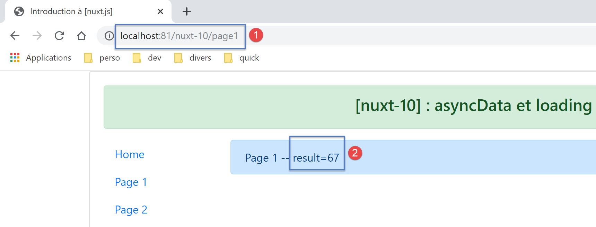

13. مثال [nuxt-10]: asyncData والتحميل
تسمح وظيفة [asyncData] في الصفحة بالتحميل غير المتزامن للبيانات، والتي غالبًا ما تكون خارجية. ينتظر [nuxt] انتهاء وظيفة [asyncData] قبل بدء دورة حياة الصفحة. وبالتالي، لا يتم عرض الصفحة إلا بعد الحصول على البيانات الخارجية. يتم تنفيذها من قبل كل من الخادم والعميل وفقًا للقواعد التالية:
- عندما يتم طلب الصفحة مباشرة من الخادم، يقوم الخادم وحده بتنفيذ وظيفة [asyncData]؛
- ثم، أثناء التنقل من جانب العميل، يقوم العميل فقط بتنفيذ وظيفة [asyncData]؛
في النهاية، يقوم أحدهما فقط — العميل أو الخادم — بتنفيذ الدالة. بالإضافة إلى ذلك، عندما يقوم العميل بتنفيذ دالة [asyncData]، يعرض [nuxt] شريط تقدم يمكن تهيئته.
تسمح وظيفة [asyncData] بتسليم الصفحات إلى محركات البحث مع بياناتها، مما يجعلها أكثر فائدة.
يتم إنشاء المثال [nuxt-10] مبدئيًا عن طريق استنساخ مشروع [nuxt-01]:

تتغير صفحة [page1] فقط.
13.1. الصفحة [page1]
فيما يلي كود صفحة [page1]:
<!-- vue n° 1 -->
<template>
<Layout :left="true" :right="true">
<!-- navigation -->
<Navigation slot="left" />
<!-- message-->
<b-alert slot="right" show variant="primary"> Page 1 -- result={{ result }} </b-alert>
</Layout>
</template>
<script>
/* eslint-disable no-console */
/* eslint-disable nuxt/no-timing-in-fetch-data */
import Navigation from '@/components/navigation'
import Layout from '@/components/layout'
export default {
name: 'Page1',
// components used
components: {
Layout,
Navigation
},
// asynchronous data
asyncData(context) {
// log
console.log('[page1 asyncData started]')
// we make a promise
return new Promise(function(resolve, reject) {
// we simulate an asynchronous function
setTimeout(function () {
// we make the result asynchronous - a random number here
resolve({ result: Math.floor(Math.random() * Math.floor(100)) })
// log
console.log('[page1 asyncData finished]')
}, 5000)
})
},
// life cycle
beforeCreate() {
console.log('[page1 beforeCreate]')
},
created() {
console.log('[page1 created]')
},
beforeMount() {
console.log('[page1 beforeMount]')
},
mounted() {
console.log('[page1 mounted]')
}
}
</script>
- الأسطر 26–39: دالة [asyncData]. لقد تناولنا هذه الدالة بالفعل (انظر القسم المرتبط). يتم تنفيذها قبل دورة حياة الصفحة. ولهذا السبب، لا يمكن استخدام الكلمة الرئيسية [this] داخل الدالة؛
- السطر 30: يجب أن تُرجع [Promise] أو تستخدم صيغة async/await؛
- الأسطر 32-37: يتم محاكاة الدالة غير المتزامنة للوعد بانتظار مدته 5 ثوانٍ (السطر 37)؛
- السطر 34: يتم إرجاع نتيجة الدالة غير المتزامنة ككائن {result:...}. يتم دمج الكائن غير المتزامن الذي ترجعه الدالة [asyncData] في كائن [data] الخاص بالصفحة. ولهذا السبب يتوفر الكائن [result] في السطر 7 من القالب على الرغم من أن الصفحة لم تحدد كائن [data]؛
13.2. تكوين شريط التقدم [asyncData]
عندما تكون الصفحة [page1] هي هدف التنقل داخل العميل (وضع SPA)، يقوم العميل بتنفيذ الدالة [asyncData]، ثم يعرض [nuxt] شريط تقدم يتم إخفاؤه بمجرد إرجاع الدالة [asyncData] لنتيجتها. تتيح لك الخاصية [loading] في ملف [nuxt.config.js] تكوين هذا الشريط:
loading: {
color: 'blue',
height: '5px',
throttle: 200,
continuous: true
},
بشكل افتراضي، صورة التحميل [nuxt] عبارة عن شريط تقدم يمتد على عرض الصفحة. هذا الشريط له لون وسماكة. ينمو الخط الملون تدريجيًا من 0% إلى 100% من حجمه، بمعدل يختلف حسب مدة الانتظار.
- السطر 2: يحدد لون شريط التقدم؛
- السطر 3: يحدد سماكة الشريط بالبكسل؛
- السطر 4: [throttle] هو التأخير بالمللي ثانية قبل بدء الرسوم المتحركة. هذا يمنع ظهور صورة الرسوم المتحركة عندما تعود الدالة [asyncData] بنتائجها بسرعة؛
- السطر 5: [continuous] يحدد سلوك الرسوم المتحركة لشريط التقدم. بشكل افتراضي، ينمو الشريط تدريجيًا من 0٪ إلى 100٪ من حجمه، بمعدل أسرع أو أبطأ اعتمادًا على وقت الانتظار. مع [continuous:true]، ينمو الشريط الملون بسرعة ثابتة من 0 إلى 100٪ من حجمه، ثم يتكرر حتى تعيد الدالة [asyncData] نتيجتها؛
13.3. التنفيذ
دعونا نطلق التطبيق، ثم نطلب يدويًا الصفحة [page1] من الخادم:

السجلات هي كما يلي:

- نرى أن الخادم [1] فقط هو الذي نفذ دالة [asyncData]، وقد فعل ذلك قبل دورة الصفحة؛
الآن دعونا نفحص الصفحة التي أرسلها الخادم (كود المصدر):
<!doctype html>
<html data-n-head-ssr>
<head>
<title>Introduction à [nuxt.js]</title>
<meta data-n-head="ssr" charset="utf-8">
<meta data-n-head="ssr" name="viewport" content="width=device-width, initial-scale=1">
<meta data-n-head="ssr" data-hid="description" name="description" content="ssr routing loading asyncdata middleware plugins store">
<link data-n-head="ssr" rel="icon" type="image/x-icon" href="/favicon.ico">
<base href="/nuxt-10/">
<link rel="preload" href="/nuxt-10/_nuxt/runtime.js" as="script">
<link rel="preload" href="/nuxt-10/_nuxt/commons.app.js" as="script">
<link rel="preload" href="/nuxt-10/_nuxt/vendors.app.js" as="script">
<link rel="preload" href="/nuxt-10/_nuxt/app.js" as="script">
...
</head>
<body>
<div data-server-rendered="true" id="__nuxt">
<div id="__layout">
<div class="container">
<div class="card">
<div class="card-body">
<div role="alert" aria-live="polite" aria-atomic="true" align="center" class="alert alert-success">
<h4>[nuxt-10] : asyncData et loading</h4>
</div>
<div>
<div class="row">
<div class="col-2">
<ul class="nav flex-column">
<li class="nav-item">
<a href="/nuxt-10/" target="_self" class="nav-link">
Home
</a>
</li>
<li class="nav-item">
<a href="/nuxt-10/page1" target="_self" class="nav-link active nuxt-link-active">
Page 1
</a>
</li>
<li class="nav-item">
<a href="/nuxt-10/page2" target="_self" class="nav-link">
Page 2
</a>
</li>
</ul>
</div> <div class="col-10"><div role="alert" aria-live="polite" aria-atomic="true" class="alert alert-primary"> Page 1 -- result=3 </div></div>
</div>
</div>
</div>
</div>
</div>
</div>
</div>
<script>window.__NUXT__ = (function (a, b, c) {
return {
layout: "default", data: [{ result: 3 }], error: null, serverRendered: true,
logs: [
{ date: new Date(1574939615256), args: ["[page1 asyncData started]"], type: a, level: b, tag: c },
{ date: new Date(1574939620263), args: ["[page1 asyncData finished]"], type: a, level: b, tag: c },
{ date: new Date(1574939620285), args: ["[page1 beforeCreate]"], type: a, level: b, tag: c },
{ date: new Date(1574939620287), args: ["[page1 created]"], type: a, level: b, tag: c }
]
}
}("log", 2, ""));</script>
<script src="/nuxt-10/_nuxt/runtime.js" defer></script>
<script src="/nuxt-10/_nuxt/commons.app.js" defer></script>
<script src="/nuxt-10/_nuxt/vendors.app.js" defer></script>
<script src="/nuxt-10/_nuxt/app.js" defer></script>
</body>
</html>
- السطر 55: يمكننا أن نرى أن الخادم أرسل إلى العميل مصفوفة [data] تحتوي على الكائن [result:3]، والذي تم دمجه في كائن [data] الخاص بصفحة [page1] على الخادم. حتى يتمكن العميل من فعل الشيء نفسه وبالتالي عرض نفس الصفحة التي يعرضها الخادم، يرسل الخادم كائن [result] إلى العميل. تذكر أن العميل لن يقوم بتنفيذ الدالة [asyncData]. بل سيستخدم ببساطة البيانات التي حسابها الخادم؛
الآن دعونا ننتقل من صفحة [Home] إلى صفحة [Page 1] باستخدام قائمة التنقل:

- في [1]، يظهر شريط التقدم؛
بعد 5 ثوانٍ، تظهر صفحة [الصفحة 1]:

السجلات هي كما يلي:

يمكننا أن نلاحظ أن العميل نفذ الدالة [asyncData] قبل بدء دورة حياة الصفحة.